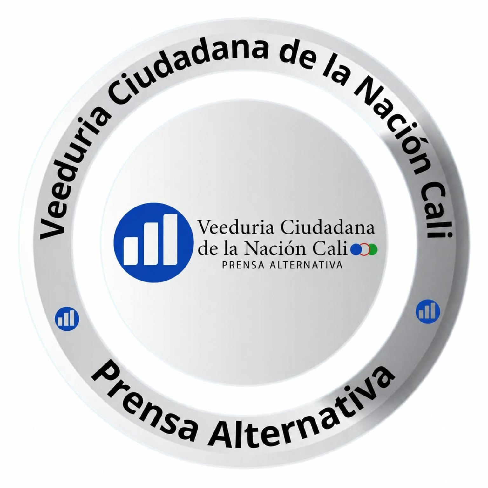
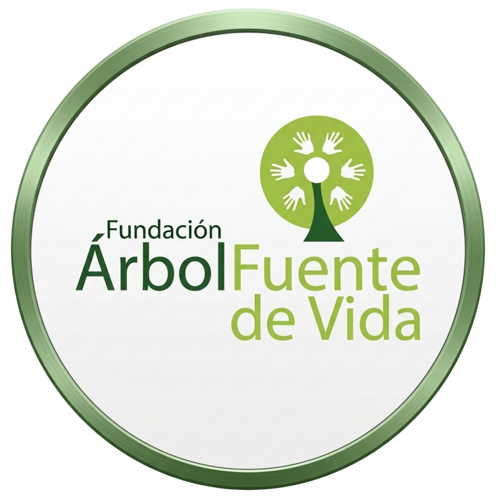

Fundación Capítulo Unidos por los Derechos Humanos Colombia



Diplomado Ley 1801 de 2016 — Código Nacional de Seguridad y Convivencia Ciudadana
Intensidad académica certificada: 80 horas. Incluye estudio guiado, lectura autónoma de normas, análisis de casos, actividades, evaluaciones y proyecto final. No exige permanecer 80 horas continuas conectado.
35 horas
Lectura, guías, normas y contenidos audiovisuales
Lectura, guías, normas y contenidos audiovisuales
30 horas
Talleres, casos, cuestionarios y proyecto aplicado
Talleres, casos, cuestionarios y proyecto aplicado
15 horas
Investigación autónoma y preparación de evaluaciones
Investigación autónoma y preparación de evaluaciones
4 semanas
20 horas semanales estimadas; avance asincrónico
20 horas semanales estimadas; avance asincrónico